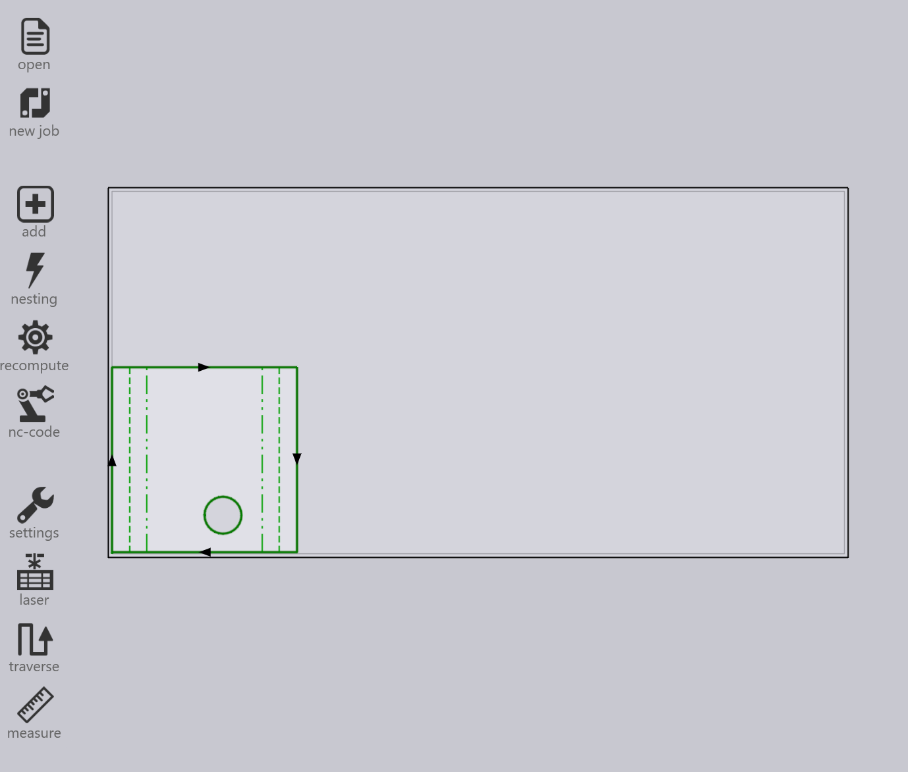

重新排料
TruSmartCAM 沒有獨立的重新排料模組。相反地，重新排料是透過 job 層級的選項來 處理，這些選項可靈活地決定零件的組合方式。
有三種方式可以進行重新排料。
-
使用 Mix parts from multiple Jobs 進行重新排料。
-
使用 Add Parts 互動式精靈進行手動重新排料。
-
使用 TecZone 進行手動重新排料。
使用 mix parts from multiple Jobs 進行重新排料
-
若要啟用此選項，請前往 factory → settings → Job → Nest settings → Mix parts from multiple Jobs。

-
啟用後，此選項允許在自動 nesting 或互動式 nesting 期間，將來自不同 job 的 零件組合在一起，產生合併的排料或 nesting。
-
例如：
-
Job-1 有 1 個零件，Job-2 有 1 個零件。
-
啟用 Mix parts from multiple Jobs 後，TruSmartCAM 可將這 2 個零件重新排料為單一最佳化的 nest。
-


-
若不使用此選項，每個 job 的零件在 nesting/排料期間會保持分離，並使用不同的 layout 名稱。
-
重新排料也可以不啟用此選項而手動執行。
使用 Add Parts 互動式精靈進行手動重新排料
-
從 layout 檢視中，選取您要重新排料的零件。
-
在零件上按一下滑鼠右鍵，然後從 layout 面板選擇 Add Parts…。

-
依照精靈中的提示完成重新排料程序。
-
選擇 Show other job parts，並將它們新增到目前 的 job。

-
檢閱變更並確認重新排料。

如需更多詳細資訊，請參閱 Add Parts。
使用 TecZone 進行手動重新排料
-
按一下
 開啟 TecZone。
開啟 TecZone。

-
在 TecZone 介面中，按一下 Add。

-
出現一個新視窗，您可以在其中選取要重新排料的零件。按一下 Show…，然後選取 Other job parts。 做出選擇後，按一下 Pick。

-
出現一個新視窗，您可以在其中定義零件需要重新排料的位置。
-
按一下 Save changes to TruSmartCAM， 重新排料後的 layout 將在 TruSmartCAM 中可用。